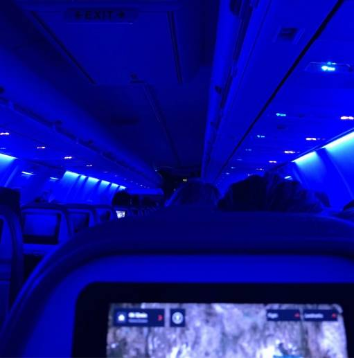

Coursework
There are so many different fields in psychology, such as cognition, emotion, development, and neuroscience. I was actually so confused before registration every sememser in my first two years in university because I have no idea which one I should choose to take. However, as a junior student, I feel like this is actually the advantage of psychology. Since we have so many fields, it's hard to tell right away what is your interest after the intro class. However, this variety of classes provides me with the opportunity to try out different fields so that at least I can use the elimination method to narrow down to what I have interest in. Another advantage is that psychology is quite interdisciplinary, and we usually introduce the same theory from various perspectives. Then, with a integrated knowldge, you may find that the intersection of the two fields is very intersting. For me, it was language, narrative, and memory development.
Lab Expereince
As a student who wants to pursue to academia career path, I think it is a necessity to first put myself in a lab and be more familiar to lab work. I was very lucky to get into a lab in my freshman year, when I literally know nothing about pschology. I think the best approach is to try everything because you never know whether you are qualified or selected if you don't try :)
Opportunities
There are a bunch of opportunities to make you more prepared for future schools. I think I'm pretty lucky to have been to conferences twice when I'm an undergraduate. I really appreciate the opportunity I had because it really widened my horizon. In the conferences, I was so immersed in the whole environment and was so fascinated by the brilliant ideas. (That's also why I want to do research~)

Future Plans
I plan to go to graduate school. To be honest, I'm still not quite sure about what I'm really going to study though I have determined the broad fields. I really hope that I can find the specific topic that I'm going to delve into in this summer break!